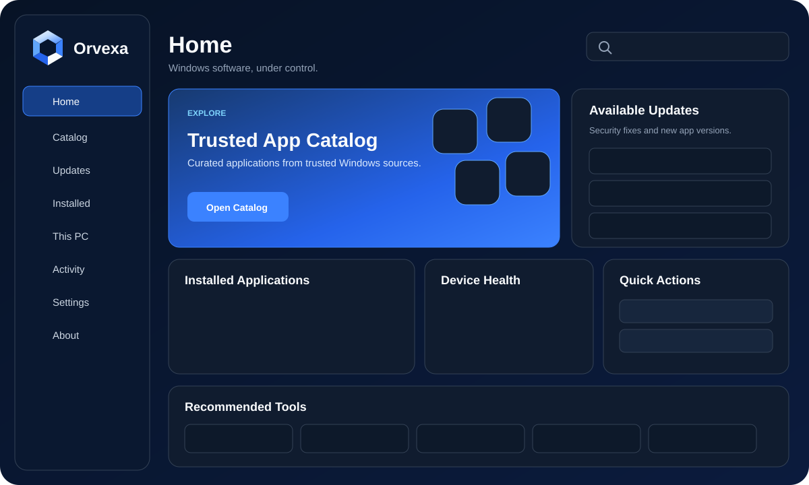

Orvexa for Windows
Your software. One control center.
Choose trusted Windows apps, build a clean pack and hand the same validated selection to Orvexa for installation.
Validated catalog
No arbitrary web commands
Local-first preferences
—curated apps
—categories
—catalog revision

Windows app
One focused Orvexa window.
Home, Catalog, Updates, Installed, This PC, Activity, Settings and About stay inside one modern Windows application.
Catalog search
Batch install
Update review
Installed apps
Favorites
Activity history
SOFTWARE CONTROL CENTER
Everything your Windows PC needs, in one place.
Workflow
Choose once. Review twice.
The website sends only Orvexa catalog IDs. The Windows app validates them again before offering installation.
Curated sets
Start with a pack
Packs add compatible apps to your current selection. You stay in control of every item before continuing.
Compatibility
Choose your Windows version
The catalog filters apps by the Windows workflow you are preparing.
Loading catalog…
Up to 100 apps per Orvexa handoff
No apps found
Try a different search, Windows version, category or filter.
Official media
Windows downloads
Orvexa links to official Microsoft pages and does not repackage Windows installation images.
Select
Your browser stores the current Orvexa selection locally on this device.
Open Orvexa
Only catalog IDs are sent through the local orvexa:// handoff.
Validate
The Windows app resolves those IDs against its bundled allowlist before installation.
Security
The website never sends arbitrary shell commands.
Orvexa keeps the browser-to-Windows boundary intentionally narrow.
Catalog validationProtocol IDs must resolve to enabled WinGet entries in the bundled Orvexa catalog.
Structured argumentsWindows package operations use structured process arguments rather than command-string concatenation.
User confirmationInstall, update-all and uninstall workflows are confirmed inside the Orvexa window.
Local preferencesSelections, favorites and theme preferences stay in browser storage on this device.
Questions
Before you install
A few important boundaries of the web experience.
Can the website install apps by itself?
No. The browser can only hand catalog IDs to the installed Orvexa Windows app. Orvexa validates and confirms them again.
Does Orvexa host third-party installers?
No. Package operations are delegated to Windows Package Manager and the relevant publisher sources.
What happens if Orvexa is not installed?
The site offers the Orvexa Setup download after a protocol handoff does not appear to open the Windows app.